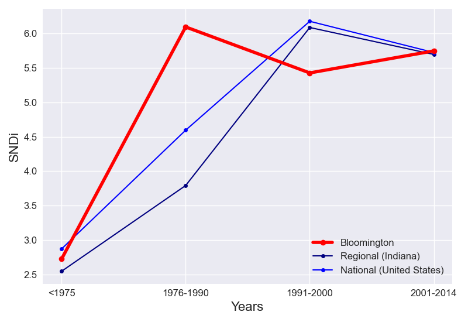

The cumulative and incremental level of street network disconnectivity in Bloomington do not follow the same trend. Cumulative SNDi is increasing steadily over time.
Taking into account all roads in Bloomington, the overall level of street network sprawl is 3.53. In <1975, the SNDi was 2.73. In 1976-1990, the SNDi was 6.09. In 1991-2000, the SNDi was 5.43. In 2001-2014, the SNDi was 5.75.
The total level of sprawl in Bloomington is higher than the regional level. Bloomington does not follow the regional trend: Between 1976-1990 and 1991-2000, regional SNDi was increasing instead.
Compared to United States, the level of sprawl in Bloomington is lower overall. Bloomington does not follow the national trend. Between 1976-1990 and 1991-2000, national SNDi was increasing instead.
To date, Bloomington is the 2nd-most disconnected city out of the 8 cities in Indiana. It has maintained its place in the ranks since 1975. In <1975, it ranked 2nd, ranked 3rd in 1976-1990 and ranked 6th in 1991-2000 and ranked 4th in 2001-2014.